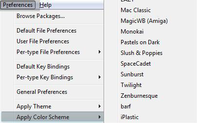
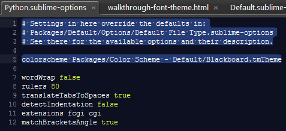

Hopefully you have worked your way through the preceding concepts section. Even if you are overloaded with details you can't recall you'll hopefully know where to find reminders.
If you've just jumped right to this section that's cool, we'll try and cater for you but there's nothing quite like doing surveillance before dropping the troops in.
We are going to look at setting up your favorite font and using a monospace font for the QuickPanel.
Setting up your favorite font globally is as simple as opening the User
File Preferences.
Per-font anti-aliasing can be specified, by appending option to the name:
If you'd like to set different fonts for different languages then look in the Per-type
preferences
This is very easy to do and it's quite obvious how.
What's not so obvious is that Sublime can set up themes per filetype.
This one isn't available from the preferences menu (yet).
Open up %APPDATA%\SublimeText\Packages\Theme - Default\Default.sublime-theme
and make the edits as seen below adjusting to taste.
Comments
blog comments powered by Disqus